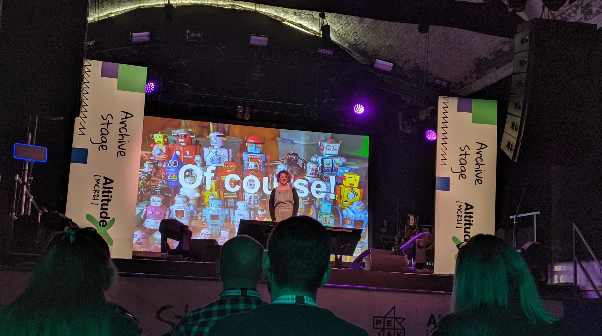

I had the chance to attend an in-person conference organised by Peak: Altitude X. The conference aimed to bring together business and data communities, and I also snuck in as an undercover academic.

My sneaking in was facilitated very kindly by Her+Data Manchester, so I want to say a big big thank you for this opportunity!

Highlights
I wanted to quickly write up the main highlights (besides catching up with people in-person) for me.
Lorraine Heggessey - Lessons learnt from a career in broadcasting
Lorraine Heggessey spoke about her career and reflected on the process of making big decisions. She said that when making big decisions there will always be people who find reasons to not make that decision. Reasons why it won’t work out.
“With big decisions, there will always be reasons not to.”
But that doesn’t mean that you should not do it. She said after an experience of taking a large risk early in her career (filming secretly in Moscow and Leningrad about mistreatment of Jewish people in the Soviet Union), which payed off, she is prone to take risk, make big decisions, and lead by doing.
I also learned that those 10-minute segments at the end of David Attenborough nature shows exist, because they were initially created so that the BBC can fill a full hour slot despite having made 50-minute long programmes.
Leanne Fitzpatrick - Why data alone isn’t enough
Leanne Fitzpatrick is head of data science at the Financial Times. Her talk focused on the importance of context, not just around data, but also around the building and implementation of our models. This is really important because we talk a lot about data quality, constraints of the data, but this needs to be considered and monitored also for the model.

“We need to consider the constraints the model was built under.”
We should ask questions like: Is the model experimental? Was it built in a short amount of time? - in that case, it might need to be closely monitored. Leanne set out a list of the “dimensions of confidence” which should be considered around the model, which includes things like the whether there is monitoring in place, the “newness” of the model, model latency, and ethical constraints.
She concluded that we must communicate the parameters of uncertainty around our models when presenting our predictions, in order to be transparent and responsible data scientists.
Conversation with Christopher Wylie
Definitely the most crowded of the talks, the conversation with data privacy expert and Cambridge Analytica whistleblower Christopher Wylie, began with a discussion on the origins of Cambridge Analytica, and covered his career trajectory, while raising very important points about what is privacy.
He mentioned how tech, especially early on was all about disruption, but it now appears some of the things which were being disrupted are essential societal elements, like social cohesion.

“Society is aware that there is “a problem” but there is no clarity on what the problem is.”
The key issue is that of regulations. With innovation, it is inherent that regulation comes after the fact. He mentioned the example of how FAA regulations came much later than the Wright brothers, and pharmaceutical regulations were toughened only after the Thalidomide scandal. But here, regulators are approaching services like Facebook as a service, but Wylie encouraged us to think about these as we would engineers. When regulating engineering products, like a bridge, there are health and safety checks. This should be applied to the virtual and tech spaces as well, to safeguard people’s privacy in the long run.
Final thoughts
Problems in the data science world overlap very much with problems in the criminology/ crime science world. There are many opportunities to think about which translate directly. For example, thinking about virtual spaces as designs with architecture. Christopher Wylie mentioned that the virtual infratructure that is constructed is what makes people behave the way they do. The curation algorithms which promote extreme content facilitate radicalisation for example. And so it might be an idea to consider CPTED ideas and principles to design safe spaces online, as well as in the physical world.
And as an experience, I was really comfortable being back to an in person conference actually. Unfortunately I couldn’t stay for the drinks reception after, but I’m looking forward to more of these as we recover from COVID-19 in the future.